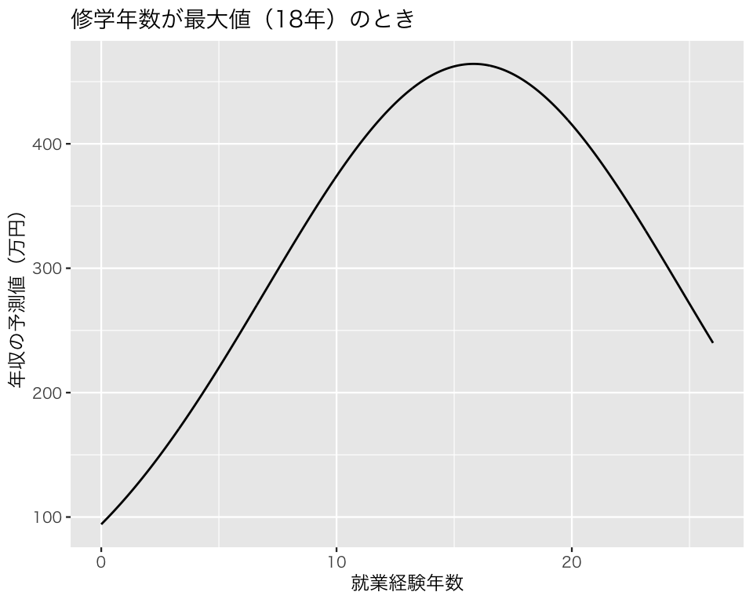

pacman::p_load(tidyverse,
broom)
if (.Platform$OS.type == "windows") {
if (require(fontregisterer)) {
my_font <- "Yu Gothic"
} else {
my_font <- "Japan1"
}
} else if (capabilities("aqua")) {
my_font <- "HiraginoSans-W3"
} else {
my_font <- "IPAexGothic"
}
theme_set(theme_gray(base_size = 9,
base_family = my_font))8 回帰分析の応用
今回の目標
- 実データを用いた回帰分析においてよく利用される変数変換について理解する
- 変数を中心化して利用できるようになる
- 回帰分析で対数変換した変数を使う意味を理解する
8.1 準備
まず、必要なパッケージを読み込む。
説明のために『Rによる計量政治学』（浅野正彦, 矢内勇生. 2018）で使用されているデータ（hr-data.csv）を使う。
データを読み込み、HRという名前のデータフレームを作る。
HR <- read_csv("data/hr-data.csv")
#glimpse(HR)衆議院議員経験があることを表すダミー変数を作る。
HR <- HR |>
mutate(experience = as.numeric(status == "現職" | status == "元職"))2009年の結果だけ抜き出したデータフレームをHR09として保存する。 （本来はmi() などで欠測値を推定すべきだが、説明を単純化するために、今回は）na.omit() を使って完全データ (complete observations) だけ残す。
8.2 回帰分析で使うテクニック
8.2.1 線形変換
選挙費用を説明変数、得票率を応答変数とする回帰式を推定する。
選挙費用を1円単位で測定した exp を使った回帰式は、次のように求めることができる。
fit_1 <- lm(voteshare ~ exp,
data = HR09)
tidy(fit_1, conf.int = TRUE)# A tibble: 2 × 7
term estimate std.error statistic p.value conf.low conf.high
<chr> <dbl> <dbl> <dbl> <dbl> <dbl> <dbl>
1 (Intercept) 7.71 0.758 10.2 2.98e- 23 6.22 9.19
2 exp 0.00000308 0.0000000961 32.0 3.64e-160 0.00000289 0.00000327よって、 \[\widehat{得票率} = 7.74 + 0.00000307 \cdot 選挙費用（1円）\] である。
これに対し、選挙費用を100万円単位で測定した expm を使うと、次のような結果になる。
fit_2 <- lm(voteshare ~ expm,
data = HR09)
## expm という変数をあらかじめ作っていないときは、次のようにする
#fit_3 <- lm(voteshare ~ I(exp / 10^6), data = HR09)
tidy(fit_2, conf.int = TRUE)# A tibble: 2 × 7
term estimate std.error statistic p.value conf.low conf.high
<chr> <dbl> <dbl> <dbl> <dbl> <dbl> <dbl>
1 (Intercept) 7.71 0.758 10.2 2.98e- 23 6.22 9.19
2 expm 3.08 0.0961 32.0 3.64e-160 2.89 3.27よって、 \[\widehat{得票率} = 7.74+ 3.07 \cdot 選挙費用（100万円）\] である。
これらの2つの回帰式の内容は、実質的にはまったく同じである。 どちらがわかりやすい？
8.2.2 標準化
\(z\)値で標準化した変数を使って回帰分析を行ってみよう。 変数\(x\)の\(z\)値は、 \[z_x=\frac{x - \bar{x}}{u_x}\] で求められる。ただし、\(u_x\)は\(x\)の不偏分散の平方根である。
例として、選挙費用（測定単位：100万円）を標準化し、得票率を説明してみよう。
HR09 <- HR09 |>
mutate(z_expm = (expm - mean(expm, na.rm = TRUE)) / sd(expm, na.rm = TRUE))
summary(HR09$z_expm) Min. 1st Qu. Median Mean 3rd Qu. Max.
-1.2221 -0.8650 -0.2624 0.0000 0.6002 3.8514 これで、expm の\(z\)値 z_expm が得られた（scale()を使うともっと簡単に計算できる）。この変数を利用して回帰式を求める。
fit_4 <- lm(voteshare ~ z_expm,
data = HR09)
tidy(fit_4, conf.int = TRUE)# A tibble: 2 × 7
term estimate std.error statistic p.value conf.low conf.high
<chr> <dbl> <dbl> <dbl> <dbl> <dbl> <dbl>
1 (Intercept) 26.5 0.480 55.3 5.93e-322 25.6 27.5
2 z_expm 15.4 0.480 32.0 3.64e-160 14.4 16.3この結果は、選挙費用（100万円）が1標準偏差増えるごとに、得票率が平均して15.37ポイント上昇することを示している。 切片の26.52は、選挙費用が平均値をとったときの得票率の予測値（平均値）である。
8.2.3 中心化
議員経験と選挙費用で得票率を説明するモデルを考える。 回帰式を求めると、
fit_5 <- lm(voteshare ~ experience * expm, data = HR09)
tidy(fit_5, conf.int = TRUE)# A tibble: 4 × 7
term estimate std.error statistic p.value conf.low conf.high
<chr> <dbl> <dbl> <dbl> <dbl> <dbl> <dbl>
1 (Intercept) -2.09 0.714 -2.93 3.48e- 3 -3.49 -0.690
2 experience 46.2 1.57 29.4 2.62e-141 43.1 49.3
3 expm 4.86 0.165 29.5 7.50e-142 4.53 5.18
4 experience:expm -4.76 0.206 -23.1 1.60e- 96 -5.16 -4.35 glance(fit_5)# A tibble: 1 × 12
r.squared adj.r.squared sigma statistic p.value df logLik AIC BIC
<dbl> <dbl> <dbl> <dbl> <dbl> <dbl> <dbl> <dbl> <dbl>
1 0.707 0.706 12.0 895. 2.72e-296 3 -4371. 8752. 8777.
# ℹ 3 more variables: deviance <dbl>, df.residual <int>, nobs <int>と、なる。このとき、係数の推定値は何を表しているだろうか。 特に、相互作用（後のトピックの講義で説明する）を表す係数には注意が必要である。
説明変数を中心化してから、同様の回帰式を求めてみよう。
HR09 <- HR09 |>
mutate(c_experience = experience - mean(experience),
c_expm = expm - mean(expm, na.rm = TRUE))
fit_5_c <- lm(voteshare ~ c_experience * c_expm, data = HR09)
tidy(fit_5_c, conf.int = TRUE)# A tibble: 4 × 7
term estimate std.error statistic p.value conf.low conf.high
<chr> <dbl> <dbl> <dbl> <dbl> <dbl> <dbl>
1 (Intercept) 34.5 0.501 69.0 0 33.6 35.5
2 c_experience 17.1 1.01 16.9 4.27e- 57 15.1 19.1
3 c_expm 2.93 0.110 26.6 5.99e-121 2.71 3.14
4 c_experience:c_expm -4.76 0.206 -23.1 1.60e- 96 -5.16 -4.35glance(fit_5)# A tibble: 1 × 12
r.squared adj.r.squared sigma statistic p.value df logLik AIC BIC
<dbl> <dbl> <dbl> <dbl> <dbl> <dbl> <dbl> <dbl> <dbl>
1 0.707 0.706 12.0 895. 2.72e-296 3 -4371. 8752. 8777.
# ℹ 3 more variables: deviance <dbl>, df.residual <int>, nobs <int>まず、残差の標準偏差 (sigmaの値、すなわち 12.0) と\(R^2\) (0.706) が説明変数を中心化する前のモデルとまったく同じことを確認してほしい。 これは、変数の中心化を行っても、回帰式の実質的な内容に変化がないことを示している。
次に、係数の意味を考えよう。切片である34.6 が表しているのは、すべての説明変数が平均値をとったときの得票率の予測値である。中心化する前のモデルでは、すべての説明変数が0のとき（非現実的でデータを代表しない値）の予測値が示されていたが、説明変数を中心化することによって、実質的に意味のある切片（データを代表するケースの予測値）を得ることができた。
c_experience の係数は、選挙費用が平均値のとき、議員経験がある候補者のほうが、議員経験がない候補者より16.99ポイント高い得票率を得ると期待されることを示す。中心化する前のモデルでは選挙費用が0の候補者（そのような候補者は存在しない！）の傾きが示されていたのに対し、ここではデータ全体を代表する傾きが示されている。
c_expmの係数は、議員経験が平均値のとき、選挙費用を1単位（100万円）増やすごとに得票率が平均2.937ポイント上昇することが期待されることを示す。中心化する前のモデルでは議員経験がない候補者の傾きが示されていたのに対し、ここではデータ全体を代表する（平均的な候補者の）傾きが示されている。
そして、c_experienceとc_expmの交差項の係数は、議員経験がある候補者とない候補者の間には、選挙費用1単位が得票率に与える影響（傾き）の差が4.77であることを示す。この値は、中心化する前のモデルと同じである。
8.2.4 対数変換
Rで自然対数に変換するにはlog() を、10を底とする対数に変換するにはlog10() を使う。 その他の値\(b\)を底とする\(x\)の対数\(\log_b(x)\)はlog(x, base = b) で求めることができる。
対数変換した変数を回帰分析で利用するときは、事前に変数を変換してもよいが、分析と同時に変換することもできる。たとえば、次のようにする。
# A tibble: 2 × 7
term estimate std.error statistic p.value conf.low conf.high
<chr> <dbl> <dbl> <dbl> <dbl> <dbl> <dbl>
1 (Intercept) 1.83 0.0174 105. 0 1.79 1.86
2 expm 0.134 0.00187 71.9 0 0.130 0.138係数の値を元の測定単位に戻したいときは、exp() で計算すればよい。対数変換していない説明変数である expm 1単位の増加すなわち100万円の支出増は、得票率を
だけ変化させる。つまり、得票率を14.3パーセント増加させる。
8.3 二次関数の推定
教育の収益率について考えよう。労働経済学においてミンサー方程式 (Mincer equation, Mincer earnings function) と呼ばれる、次のような式がある（田中 2015: 第6章を参照 [電子書籍]）。 \[ \log(賃金_i) = \beta_0 + \beta_1 修学年数_i + \beta_2 就業経験_i + \beta_3 就業経験_i^2 + \epsilon_i \] ただし、「就業経験」は、 \[ 就業経験 = 年齢 - 修学年数 - 6 \] である（田中 [2015] では「就業可能年数」とされている）。最後の項の6は、小学校に入学する年齢である。
このミンサー方程式を、回帰分析で推定してみよう。ここで確かめたいのは、 1. 修学年数が賃金を上昇させるか（そして、どれくらい上昇させるか） 2. 就業経験が賃金を上昇させるか（そして、どれくらい上昇させるか） であるが、就業経験の二乗項も説明変数に含まれている。これは、経験が浅いうちは、経験が賃金に与える正の効果が大きいが、年齢が上がると経験を積んでも賃金が上がりにくくなる（場合によっては下がる）ことが想定されるからである。つまり、経験が賃金に及ぼす影響は逓減すると想定されている。
練習のために fake_income.csv を使う（名前からわかる通り、架空のデータである）。データをダウンロードしてプロジェクト内のdata ディレクトリに保存しよう。保存できたら、データを読み込む。
download.file(
url = "https://yukiyanai.github.io/jp/classes/econometrics1/contents/data/fake_income.csv",
dest = "data/fake_income.csv")
myd <- read_csv("data/fake_income.csv")Rows: 1000 Columns: 3
── Column specification ────────────────────────────────────────────────────────
Delimiter: ","
dbl (3): income, education, experience
ℹ Use `spec()` to retrieve the full column specification for this data.
ℹ Specify the column types or set `show_col_types = FALSE` to quiet this message.glimpse(myd)Rows: 1,000
Columns: 3
$ income <dbl> 33.9522, 124.6808, 140.4259, 79.6559, 145.1946, 1000.2209, …
$ education <dbl> 12, 16, 12, 14, 16, 16, 15, 14, 15, 16, 18, 12, 13, 15, 14,…
$ experience <dbl> 3, 18, 16, 14, 14, 11, 10, 16, 20, 18, 19, 6, 20, 19, 10, 5…この回帰分析における応答変数は所得 income （万円）の自然対数、説明変数は修学年数 education、就業経験年数 experience と就業経験年数の二乗である。
まず、lm() を使って推定を行う。推定式の中で自然対数を計算するために log() を、二乗の計算を行うために、二乗した式を I() で囲む。
結果を確認してみよう。
tidy(fit_mincer, conf.int = TRUE)# A tibble: 4 × 7
term estimate std.error statistic p.value conf.low conf.high
<chr> <dbl> <dbl> <dbl> <dbl> <dbl> <dbl>
1 (Intercept) 2.07 0.215 9.60 6.09e-21 1.65 2.49
2 education 0.138 0.0143 9.61 5.61e-21 0.109 0.166
3 experience 0.202 0.0162 12.5 2.92e-33 0.170 0.233
4 I(experience^2) -0.00637 0.000683 -9.34 6.32e-20 -0.00771 -0.00503応答変数が自然対数になっていて、修学年数 (education) の係数の推定値が 0.14なので、教育の収益率は14%ほどであることがわかる。また、\(t\)値（statistic の列の値）が2よりもだいぶ大きいので、5パーセントの有意水準でこの効果は統計的に有意であることがわかる。
問： では、この効果は実質的に重要だろうか？
修学年数の影響とは異なり、就業経験の効果は、推定値を見ただけではわかりにくい。なぜなら、就業経験年数を動かすと、就業経験年数の二乗も一緒に動いてしまうからだ。そこで、修学年数を固定し、就業経験年数と就業経験年数の二乗を動かすと、応答変数である年収の対数がどのように動くか図示してみよう。
まず、データ内の修学年数の平均値を求める。
(mean_educ <- mean(myd$education))[1] 13.832次に、就業経験年数の最小値と最大値を求め、その範囲の値をとる長さ1,000のベクトルを作る。
修学年数を平均値に固定し、就業経験年数と就業経験年数の二乗を動かして予測値を求める。
就業経験年数の変化に応じて年収の自然対数がどのように変化するか図示してみよう。
dd <- tibble(exper = exper_vec,
pred_mean = pred_mean) # ggplot2 で使うためにデータフレームを作る
plt_1 <- ggplot(dd, aes(x = exper, y = pred_mean)) +
geom_line() +
labs(x = "就業経験年数", y = "対数年収の予測値",
title = "修学年数が平均値（13.8年）のとき")
plot(plt_1)これで、就業経験年数と対数年収の間にある非線形の関係が図示できた。 対数年収はわかりにくいので、exp() で元の単位に戻そう。
plt_2 <- ggplot(dd, aes(x = exper, y = exp(pred_mean))) +
geom_line() +
labs(x = "就業経験年数",
y = "年収の予測値（万円）",
title = "修学年数が平均値（13.8年）のとき")
plot(plt_2)これで、修学年数が平均値のとき、就業経験年数と年収の間にある関係が図示できた。
修学年数が最小値のとき、最大値のときはどうだろうか。
修学年数が最小値のときは、
(min_educ <- min(myd$education))[1] 9pred_min <- coef(fit_mincer)[1] +
coef(fit_mincer)[2] * min_educ +
coef(fit_mincer)[3] * exper_vec +
coef(fit_mincer)[4] * exper_vec^2
dd$pred_min <- pred_min
plt_3 <- ggplot(dd, aes(x = exper, y = exp(pred_min))) +
geom_line() +
labs(x = "就業経験年数",
y = "年収の予測値（万円）",
title = "修学年数が最小値（9年）のとき")
plot(plt_3)修学年数が最大値のときは、
(max_educ <- max(myd$education))[1] 18pred_max <- coef(fit_mincer)[1] +
coef(fit_mincer)[2] * max_educ +
coef(fit_mincer)[3] * exper_vec +
coef(fit_mincer)[4] * exper_vec^2
dd$pred_max <- pred_max
plt_4 <- ggplot(dd, aes(x = exper, y = exp(pred_max))) +
geom_line() +
labs(x = "就業経験年数",
y = "年収の予測値（万円）",
title = "修学年数が最大値（18年）のとき")
plot(plt_4)
以上の結果を1つの図にまとめたいときは、以下のようにする（やや難しい）。 まず、データを変換する。 現在のデータは、
head(dd)# A tibble: 6 × 4
exper pred_mean pred_min pred_max
<dbl> <dbl> <dbl> <dbl>
1 0 3.97 3.31 4.54
2 0.0260 3.98 3.31 4.55
3 0.0521 3.98 3.32 4.56
4 0.0781 3.99 3.32 4.56
5 0.104 3.99 3.33 4.57
6 0.130 4.00 3.33 4.57dim(dd)[1] 1000 4のように横長 (wide) になっている。これを縦長 (long) に変換する。そのために、tidyr::pivot_longer() を使う。
dd_long <- dd |>
pivot_longer(cols = pred_mean:pred_max,
names_to = "education",
names_prefix = "pred_",
values_to = "predicted")どのように変換されたか確認してみよう。
head(dd_long)# A tibble: 6 × 3
exper education predicted
<dbl> <chr> <dbl>
1 0 mean 3.97
2 0 min 3.31
3 0 max 4.54
4 0.0260 mean 3.98
5 0.0260 min 3.31
6 0.0260 max 4.55dim(dd_long)[1] 3000 31000行4列のデータが、3000行3列になったことがわかる。これで、3つの曲線を1つの図に示せる。 以下のようにする。